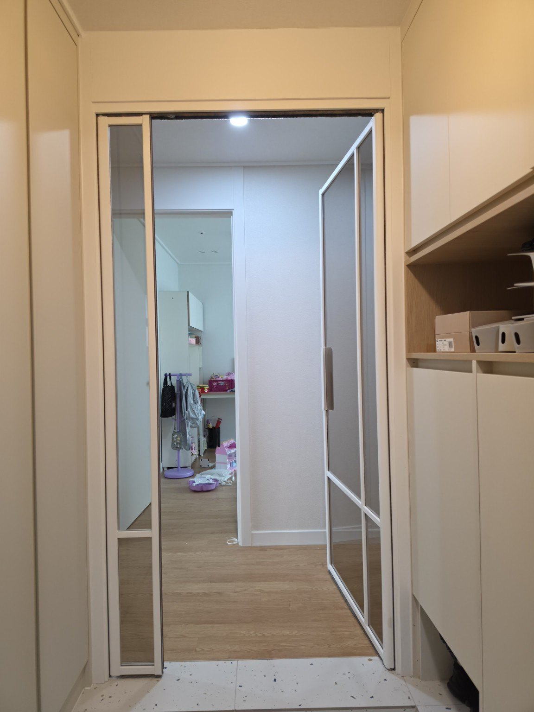
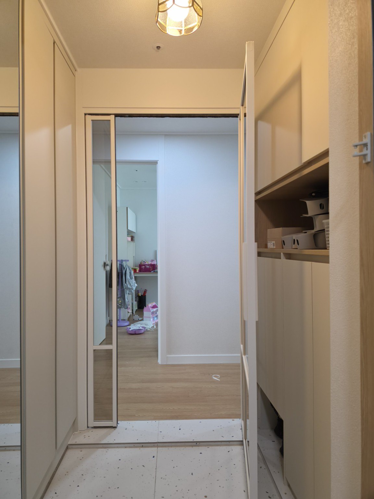
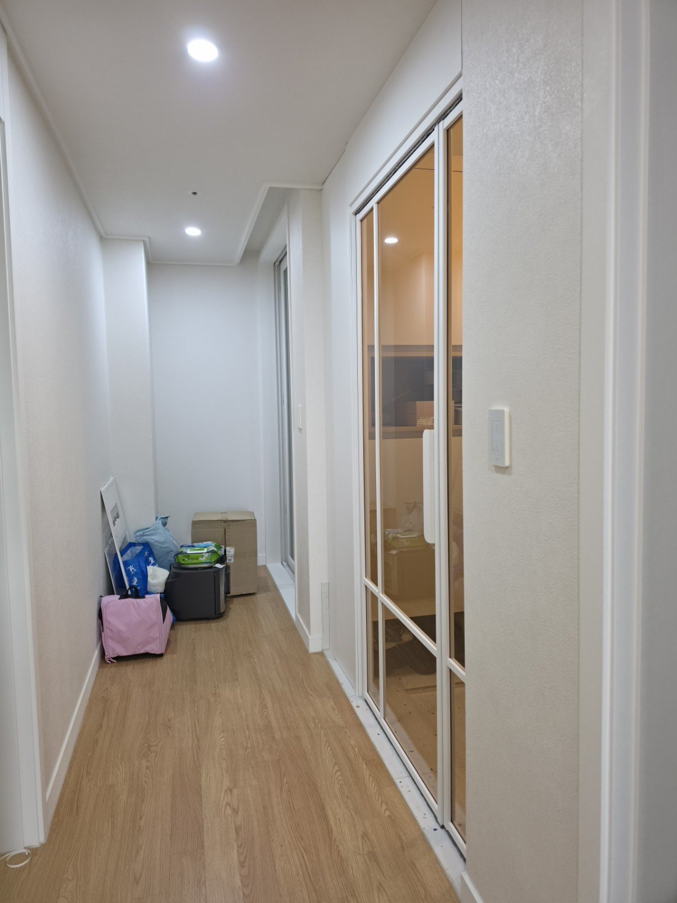
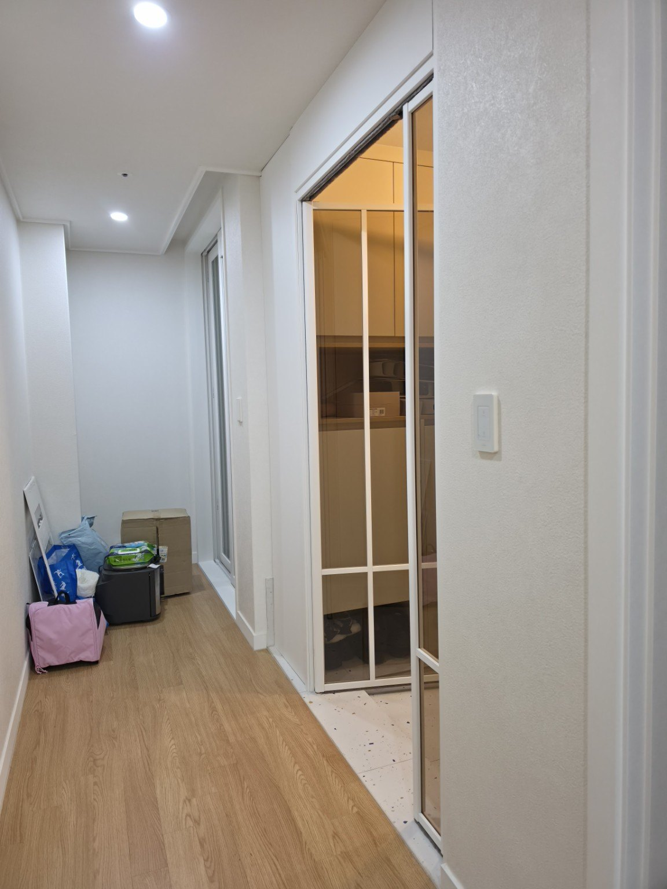
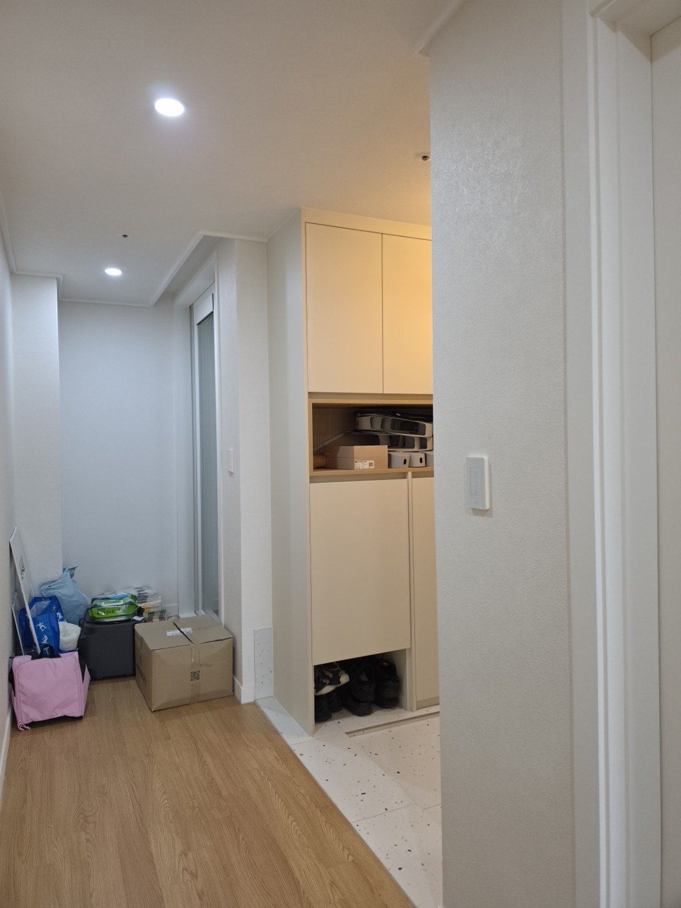
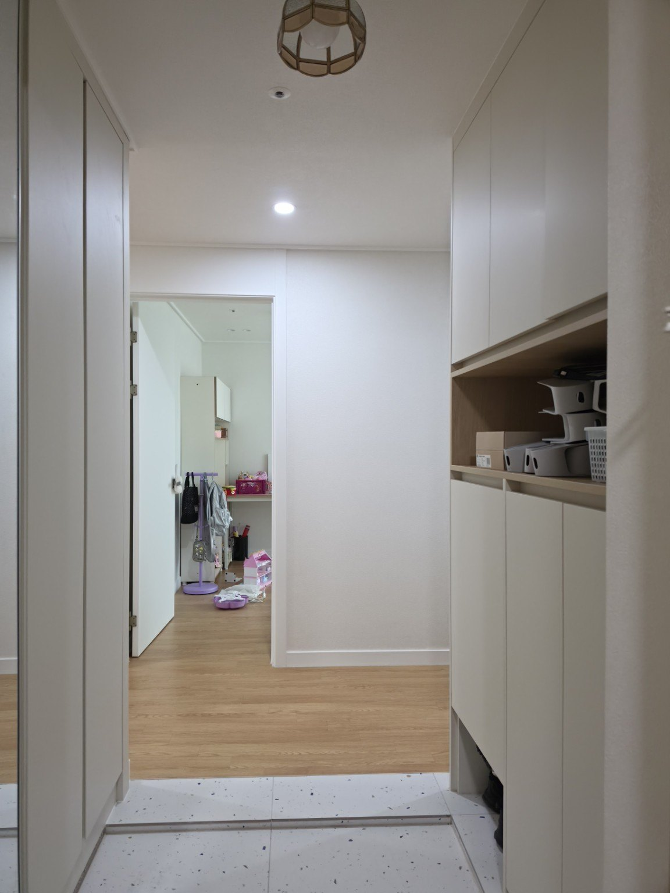

동탄2 LH26단지 2611동 45형
양방향 비대칭 양개도어 현관중문 시공
경기도 화성시 동탄대로9길 20, 동탄2 LH26단지 2611동 45형에서 진행한 현관중문 시공사례입니다.
현장 : 동탄2 LH26단지 2611동
평형 : 45형
시공일 : 2026년 9월 12일
시공제품 : 양방향 비대칭 양개도어 현관중문
프레임 : 화이트

동탄2 LH26단지 45형 현관중문
이번 현장은 현관 입구에 화이트 프레임의 비대칭 양개도어를 설치했습니다. 큰 주사용 문짝과 폭이 좁은 보조 문짝을 조합해 평소에는 주 문짝을 사용하고, 필요할 때 보조 문짝까지 열어 출입 폭을 넓게 활용할 수 있도록 구성했습니다.
양방향 개폐로 편리한 출입 동선
문짝을 한 방향으로만 사용하는 방식이 아니라 양방향으로 개폐할 수 있도록 시공해 현관 안팎의 이동에 맞춰 사용할 수 있습니다. 사진에서는 닫힌 상태와 열린 상태를 함께 확인할 수 있습니다.
이번 시공의 핵심
동탄2 LH26단지 45형 현관 구조에 맞춘 화이트 비대칭 양개 구성과 양방향 개폐 방식입니다.
동탄2 LH26단지 45형 현관 구조에 맞춘 화이트 비대칭 양개 구성과 양방향 개폐 방식입니다.
시공 사진






문다라 현관중문 상담
현관 구조와 사용 동선에 맞춰 중문 형태를 상담해 드립니다.
전화 상담 010-2432-1107